Background
In electric vehicles, the absence of internal combustion engine noise makes previously masked sounds clearly audible. Among these, vibrations from the A/C compressor transmitted through refrigerant hoses and rubber mounts into the cabin are a significant NVH challenge.
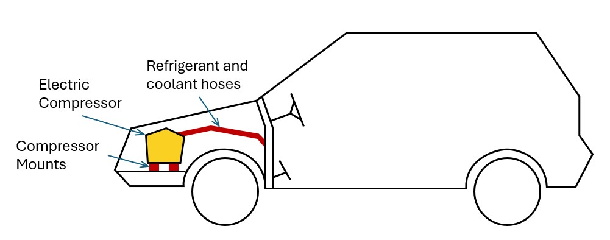
To optimize the packaging and design of these interface components (refrigerant hoses, rubber mounts), our vehicle integration strategy relied on predictive FEM simulations. However, these simulations were unreliable because they lacked accurate input data for the frequency-dependent dynamic stiffness of the components across four degrees of freedom: tension/compression, shear, torsion, and bending:
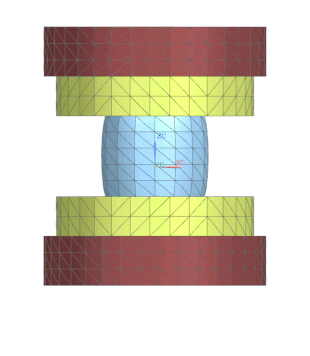
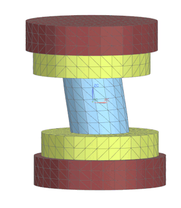
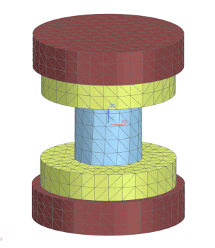
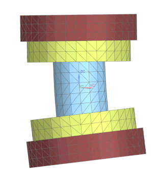
The problem was that no suitable measurement method existed. Standard test machines — designed for stiffer engine mounts — operated at the wrong force amplitudes and frequency ranges for the soft composite hoses in question (PTFE core, elastomer braid, textile sleeve). They also lacked the ability to measure rotational degrees of freedom, capturing only translational stiffness. The team had begun developing a dedicated test bench from scratch, and I joined the project at the prototype stage.
The Measurement Concept
Before any test bench could be built, the measurement principle had to be settled. The bench uses an inertial method. A hose specimen is clamped between two metal parts: an outer active part driven by two electrodynamic shakers, and an inner passive part that floats freely. An accelerometer is mounted on each part — and, remarkably, those two sensors are all the instrumentation the method needs.
Each accelerometer measures the acceleration of its part. Integrating that signal once over time yields the part's velocity; integrating a second time yields its displacement. The specimen's deformation is then simply the difference between the two parts' displacements, Δx = x2 − x1 — recovered without ever measuring position directly.
The force flowing through the hose is reconstructed the same way. Isolating the passive part in a free-body diagram, only two forces act on it: the force transmitted by the hose, and the part's own inertia. They must balance — so the hose force is just the passive part's mass times its measured acceleration, Fhose = m2 ⋅ ẍ2. Dividing force by deformation gives the dynamic stiffness:
The elegance of this is that the entire force path is reconstructed from two accelerometers — with no multi-axis load cells, which are expensive, bulky, and difficult to source for combined loads. And because both force and deformation are derived from acceleration alone, the very same principle covers all four degrees of freedom.
This indirect route is worth the effort because the hoses cannot be characterised any other way. They are anisotropic composite sandwiches — a PTFE core, a reinforcement braid, and a textile sleeve — so their stiffness cannot be derived from a single datasheet modulus; it has to be measured separately in each of the four directions. And because the elastomer is viscoelastic, that stiffness is not even a constant: it rises with excitation frequency, the dynamic value reaching up to roughly twice the static one. Useful input data therefore has to span the whole operational frequency range.
Technical Implementation
With the measurement principle settled, the test bench could be designed around it. The symmetrical design enables all four loading modes through simple reconfiguration. When both shakers move in phase, the specimen sees pure tension/compression; reversing one shaker's phase produces bending. Rotating the rig 90° and repeating these two configurations yields torsion and shear.
Centre-of-gravity alignment along the hose axis eliminates cross-coupling, ensuring each mode is excited in isolation.
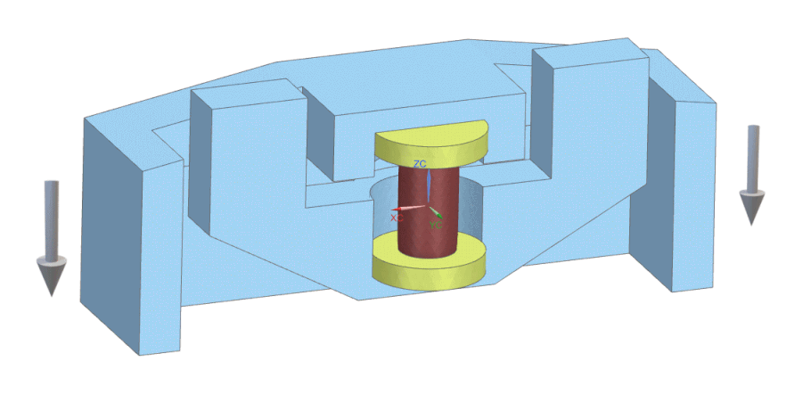
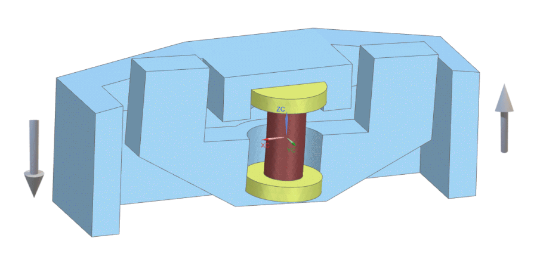
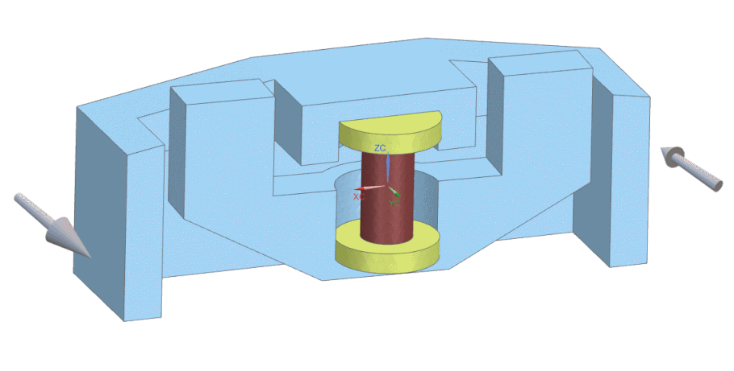
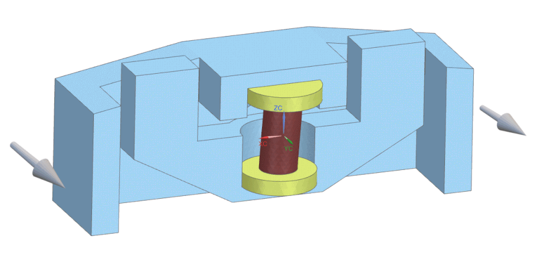
The Problem
The first-generation test bench worked as a proof of concept, but with a critical limitation. At lower frequencies the measured dynamic stiffness matched theoretical expectations, but beyond roughly 300–400 Hz the values skyrocketed exponentially — behaviour that does not reflect real elastomer physics. Feeding these artificially inflated results into the simulation would mean garbage in, garbage out: over-engineered mounts and hose geometries designed to solve problems that don't actually exist in the vehicle.
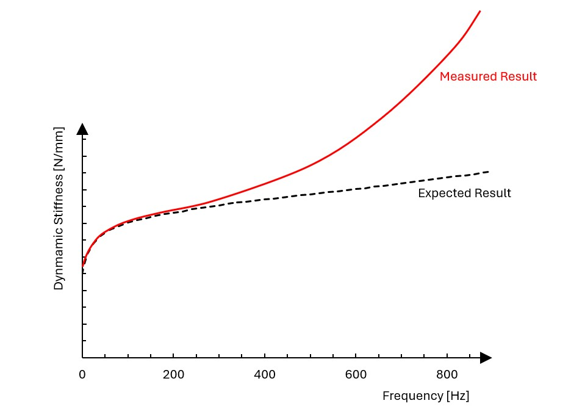
The root cause was structural resonance of the rig itself. The measurement principle assumes both metal parts behave as rigid bodies, and at low frequencies they do. But as the excitation frequency increases, the shakers begin exciting the natural modes of the fixture's structural members, introducing parasitic deformation into the force path and corrupting the stiffness calculation.

Design Objective
Given these findings, the goal for the next-generation test bench was clear: achieve exceptional structural rigidity, pushing the first natural frequency well above the 1,000 Hz operational range to ensure that the rig's own resonances would not interfere with the measurements.
First-Principles Redesign
Within my first months on the project I picked up the inertial measurement principle, CATIA, and Simcenter LMS Test.Lab — each from a brief introduction followed by independent practice.
My supervisor attacked the resonance problem by adding reinforcement ribs to the existing structure. The reinforced concept reached a first resonance of 3,000–3,300 Hz in Simcenter 3D / Nastran, and he considered it near-optimal — my task, he told me, was to finalise the design and release it to the workshop.
"Finalise this design and send it to manufacturing. I have spent over forty hours on it — it is the best possible. Start from scratch and you will just waste time and arrive at the same result."
I was not convinced. Three times the operational range leaves little margin, and reinforcing ribs treat the symptom rather than the cause. I asked for a few days and spent five personal weekend days developing an independent concept from first principles.
A structure's first natural frequency is set by its stiffness k and its mass m:
To push the resonance up, you want both a stiffer structure and a lighter one. That is exactly where the rib approach falls short. The ribs do raise stiffness — but only locally, around the perimeter, and often not aligned with the load path, while a large open void is left in the centre. Worse, they add both size and mass. Stiffness up, mass up: the two effects largely cancel.
I chose the opposite strategy — shrink the parts and close the topology — because it attacks the frequency from both sides at once. Bending stiffness scales steeply with size; for a beam it goes as
so making a part shorter raises its stiffness disproportionately — and a smaller part is also a lighter one. Stiffness up hard, mass down: this time the effects compound instead of cancelling.
What stops me from shrinking the outer active part?
The inner passive part inside it.
What stops me from shrinking the inner part?
Centre-of-gravity alignment, which forced its mass out onto long arms.
What forces the hose specimen to be this long?
Nothing — it was tradition, carried over unquestioned from older rig generations.
Turning that into geometry meant questioning every fixed dimension in turn. Making the specimen shorter let the passive part's centre of gravity sit close to the hose without long balancing arms; the part could then be made narrower and its mass redistributed into a compact ring. The same moves applied to the outer active part, and the whole rig was reworked into a closed-section geometry.
The redesign jumped the first resonance from the incremental concept's 3,300 Hz to 7,500 Hz in simulation in a single step — later refined collaboratively to 8,500 Hz, three times better than the previous concept. It was manufactured and became the production bench.
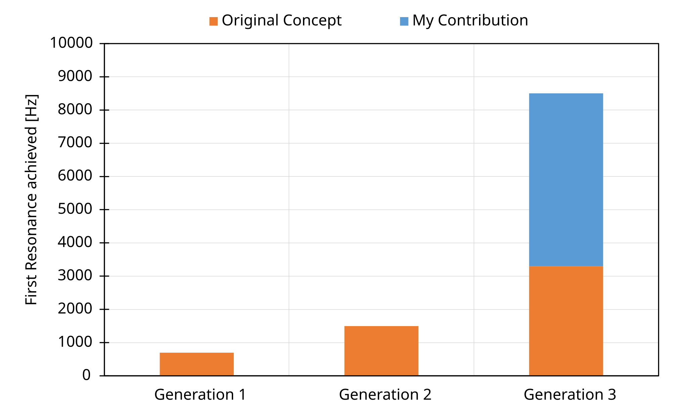
Scope of Work
- Full CATIA design of 20+ machined parts across multiple test fixtures — from concept to workshop-ready models including tolerances, thread specifications and material selection (aluminium, steel, POM)
- Modal analysis and Direct Frequency Response studies in Simcenter 3D (Nastran solver) for iterative design validation
- 500+ laboratory experiments measuring dynamische Steifigkeit of hose specimens using Simcenter LMS Test.Lab and SCADAS hardware
- Data post-processing pipeline: LMS Test.Lab → MATLAB → custom Excel tool (co-developed with supervisor)
- Parallel development of equivalent test bench for compressor rubber mounts (2 DOF: compression and shear)
- Comprehensive methodology documentation enabling team continuity after project handover
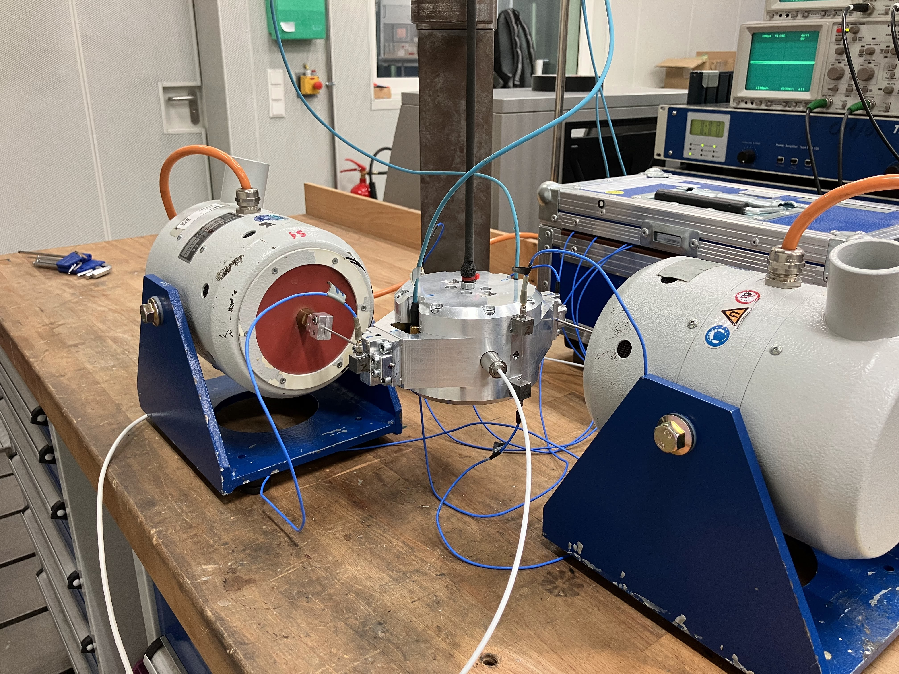
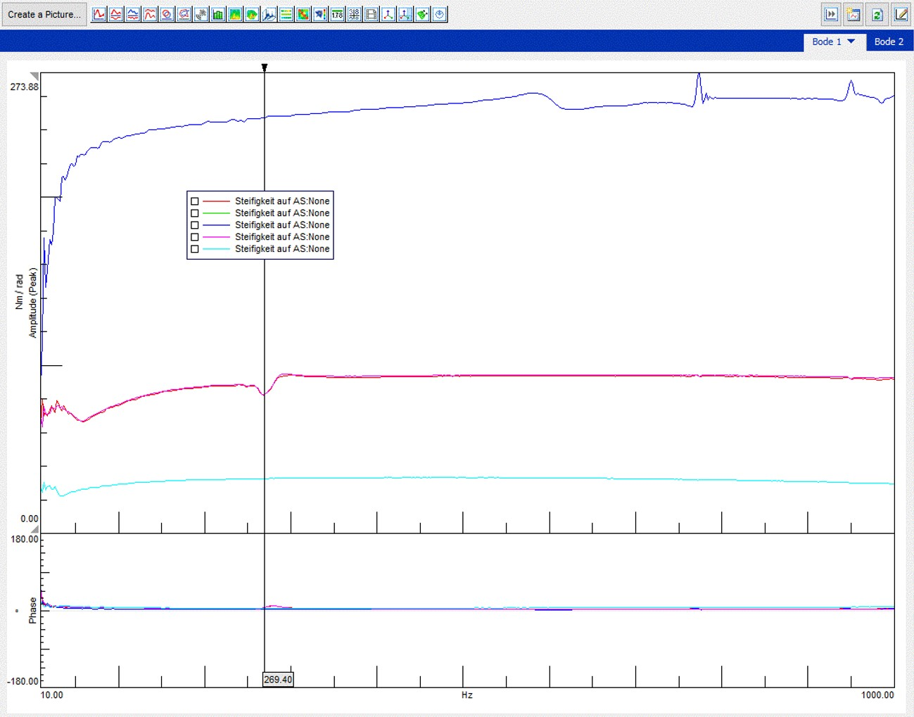
Results & Impact
- Test bench with 8,500 Hz first resonance — 3× improvement over previous concept, significantly expanding usable measurement bandwidth
- Complete hose and rubber mount characterisation database delivered — direct input to NVH simulation models
- Methodology and tooling adopted by colleagues after project handover; results feed into BMW Neue Klasse development
- Workshop staff surprised to learn the designs came from a student — "these look like a senior engineer's work"
Tools & Skills
See next
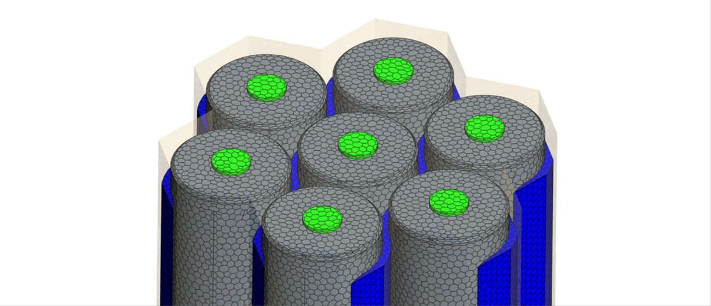